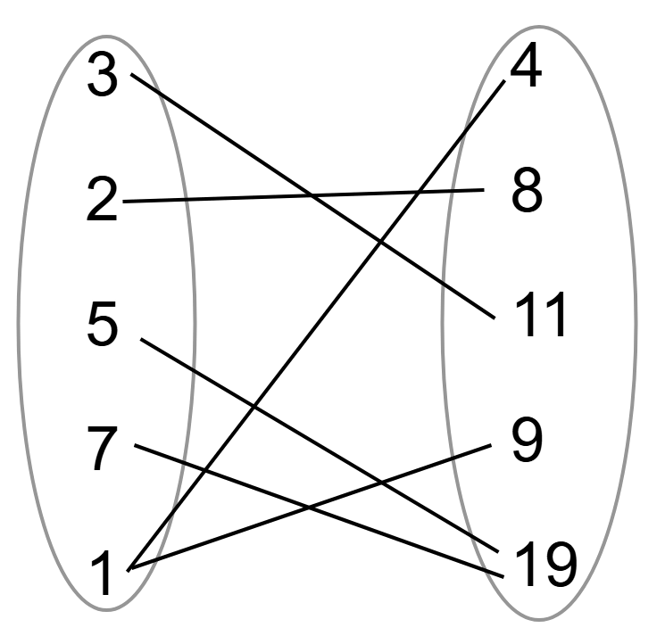

Functions in mathematics are a relationship between inputs and outputs…
| X | Y |
|---|---|
| 1 | 1 |
| 2 | 4 |
| 3 | 9 |
| 4 | 16 |
| 5 | 25 |
| 6 | 36 |
Functions don’t have to be in numerical order…
| X | Y |
|---|---|
| 0 | 0 |
| 7 | 6 |
| 4 | 3 |
| 6 | 5 |
| 1 | 0 |
| 8 | 7 |
Mathematical Functions in math have one rule. That rule is that an input has one output. In other words, an input cannot have multiple outputs…
| X | Y |
|---|---|
| 0 | 0 |
| 7 | 1 |
| 3 | 2 |
| 7 | 9 |
| 8 | 12 |
| 1 | 0 |
This function has one number (7) that has two separate inputs (1 & 9), therefore this isn’t a function.
Functions can also be shown as this…

If a function has a number that has two separate outputs, it is not a function. In this example, when 1 is the input, both 4 and 9 are the outputs which breaks the rule that functions cannot have one input that has multiple outputs.
There are many types of mathematical functions. One common type is linear functions…
Linear functions are mathematical functions that have an unknown variable (usually with a coefficient) to to the power of 1.
The slope of linear functions is always the coefficient with the variable, the y-intercept is the whole number…
This function has a slope of 5/1 and a y-intercept of -4.
Quadratic Functions are mathematical functions that have an unknown variable (usually with a coefficient) to the power of 2…
The coefficient for the squared variable cannot equal zero.
Polynomial functions are functions that contain a coefficient with a variable to a power greater than one like this one…
For some problems, a piece of the function is missing and you would have to find out that missing piece. This could include inputs and outputs.
To find a missing input, you can turn the function into an x = y format...
Now solve the equation like a linear equation...
Now if we input 11, we get 29 therefore, x = 11.
To find a missing output, substitude x as the input...
So when we input 11, we get 273.